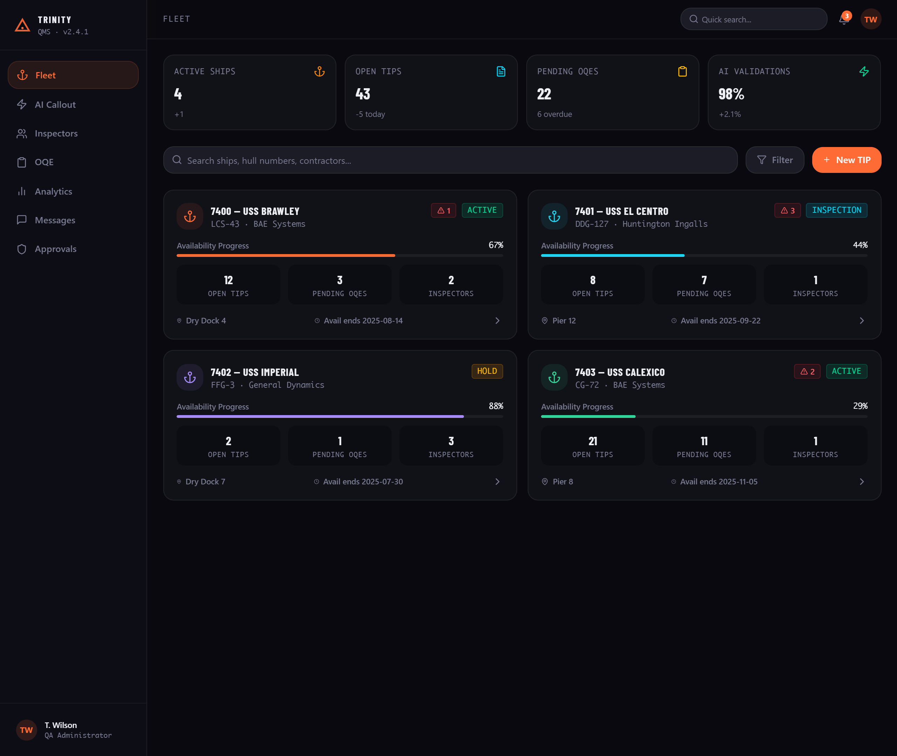

Trinity: making complex QA operations easier to navigate.
Trinity is a mobile-first AI-powered quality management system designed to centralize fragmented operational workflows, documentation, scheduling, reporting, personnel, and equipment information.

Fragmented work creates friction.
QA operations involve schedules, documentation, inspections, personnel qualifications, equipment, compliance, and reporting. Trinity was designed to bring those workflows into one connected product experience.
Use familiar interaction patterns and clear information hierarchy so users can find what they need quickly instead of navigating disconnected spreadsheets, documents, and manual processes.
The interface direction prioritizes clarity first: important information is surfaced immediately while deeper workflows remain available without overwhelming the user.
One product, multiple operational workflows.
Trinity connects the different parts of shipyard QA work instead of treating each workflow as a separate system.
Operational visibility across ships, availabilities, TIPs, OQEs, inspectors, tasks, and project status.
Equipment identity, calibration status, registration, tool control, and checkout workflows.
Evidence, inspection records, work context, signatures, approvals, and final submission.
See the product beyond the dashboard.
Trinity is more than a dashboard. The product is structured around connected workflows that allow users to move from operational planning to equipment control and quality evidence.


Designed around the work, not the software.
The design process focused on translating complex operational requirements into understandable interfaces and repeatable workflows.
Identify the operational problem, users, constraints, and information needed to complete the task.
Organize complex information into logical workflows, navigation, and clear information hierarchy.
Translate the workflow into interfaces and interactive product concepts.
Iterate on usability, clarity, and operational fit as requirements evolve.
Reduce the administrative load.
Trinity incorporates AI and automation concepts for document processing, information retrieval, workflow generation, compliance checks, and repetitive administrative tasks.
Rather than adding AI as a separate feature, the product direction places automation directly inside the workflows where users already spend time.
This creates a path toward reducing repetitive administrative work while keeping users in control of the final operational decisions.
A connected operating layer for QA.
Trinity brings operational information into a consistent product experience, creating a connected path from task → evidence → status → action.
Operational information is brought together instead of being scattered across disconnected workflows.
Complex processes are translated into interfaces designed around how users actually complete their work.
Users can move from information to the next operational action without unnecessary navigation.
Explore the working product.
The visuals above provide a quick preview of the Trinity product. For the full interactive experience, explore the working Figma prototype.